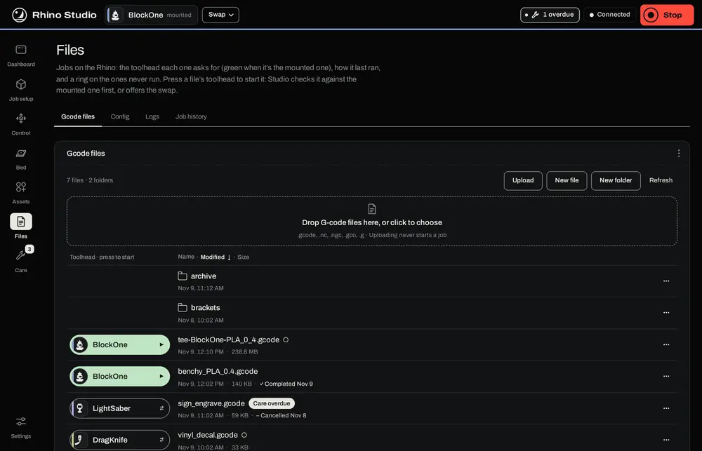
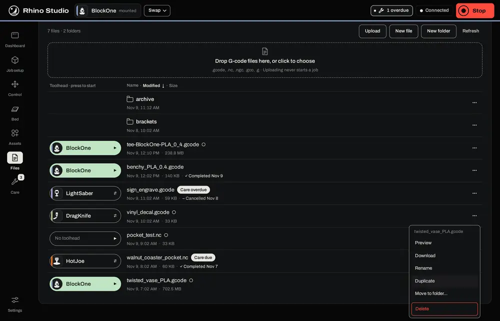
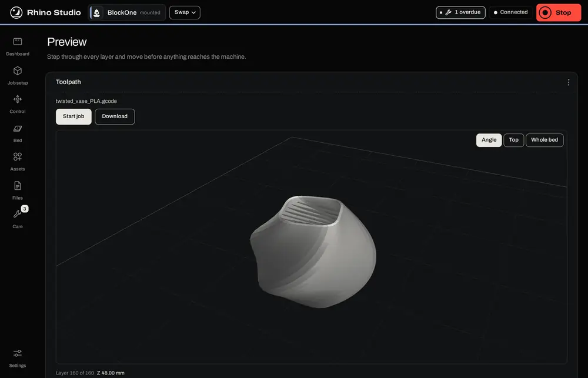
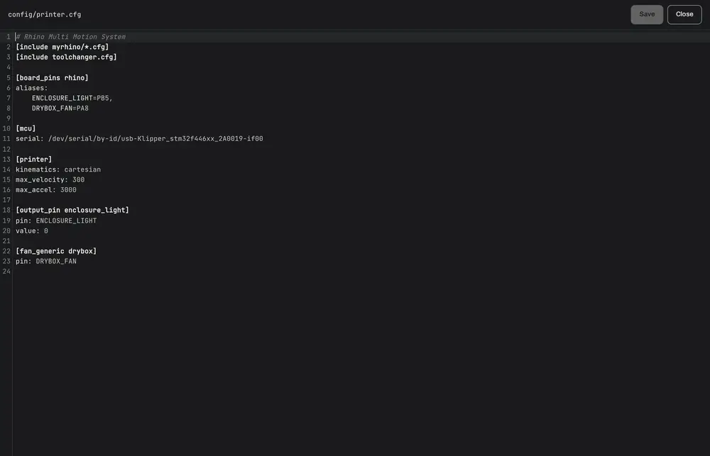
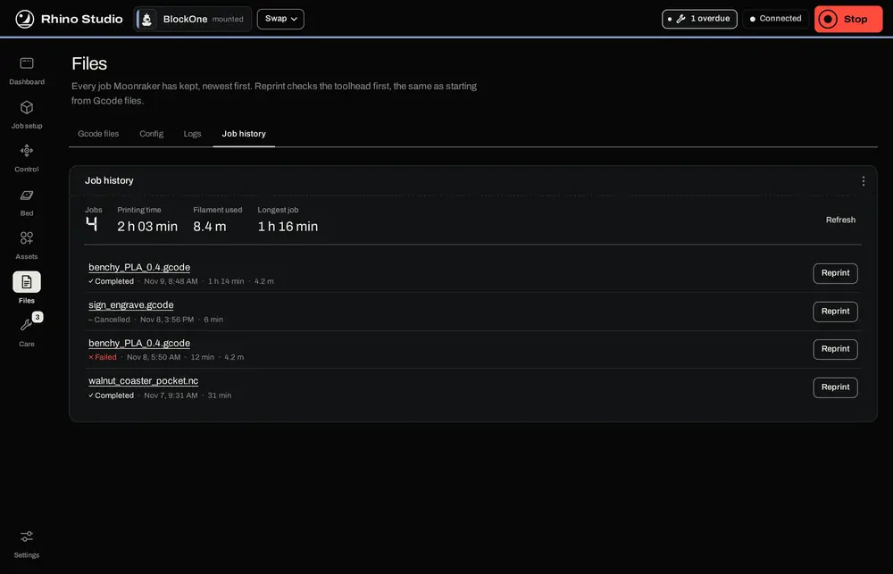

Files holds what is stored on the Rhino, in four tabs: Gcode files (the jobs), Config (Klipper's config folder), Logs and Job history.
Each job shows the toolhead it asks for, how it last ran (completed, cancelled or failed, with the date), and a ring if it has never run. A tool button is green when that tool is mounted. Press it to start the job: Studio checks the file against the mounted tool, shows any maintenance due for it, and asks first. If a different tool is mounted, the button offers the swap instead.


To keep the load on the host light, the toolhead is read for the newest 40 files in each folder. Older files in a long folder show without one; tidy them into folders to keep each list short.
Preview opens the job on its own page, with the same controls as Job setup's Preview (see Job setup and Preview), plus Start job (or Swap to …) and Download. During a job it asks before reading a file, because a big file adds work for the host while the machine runs.

The Config tab is Klipper's config folder. Click a file to open it in the editor, change it and press Save (or Ctrl+S). Close asks before throwing away changes. Saving keeps a copy of the file as it was in studio_backups, and never restarts Klipper by itself: a bar then offers Restart Klipper to apply (or Moonraker or the cameras, for their files), which can't be pressed while a job is running.

Edit only files you know. The files the Portal writes, myrhino/custom_tools.cfg and myrhino/job_hooks.cfg, are rewritten from its own records: change them through Assets instead, or your edit will be lost.
Logs lists Klipper's and Moonraker's logs, read-only; open one to read it or download it to send with a problem report. Job history lists every job Moonraker has kept, newest first, with the total printing time, filament used and longest job at the top. Reprint starts a job again, after the same toolhead check as Gcode files. A file deleted or moved since is marked.
